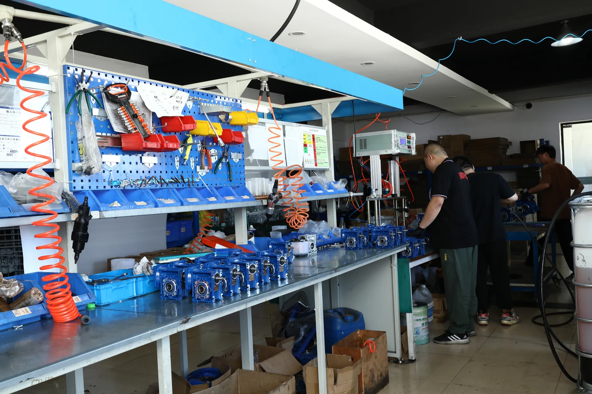
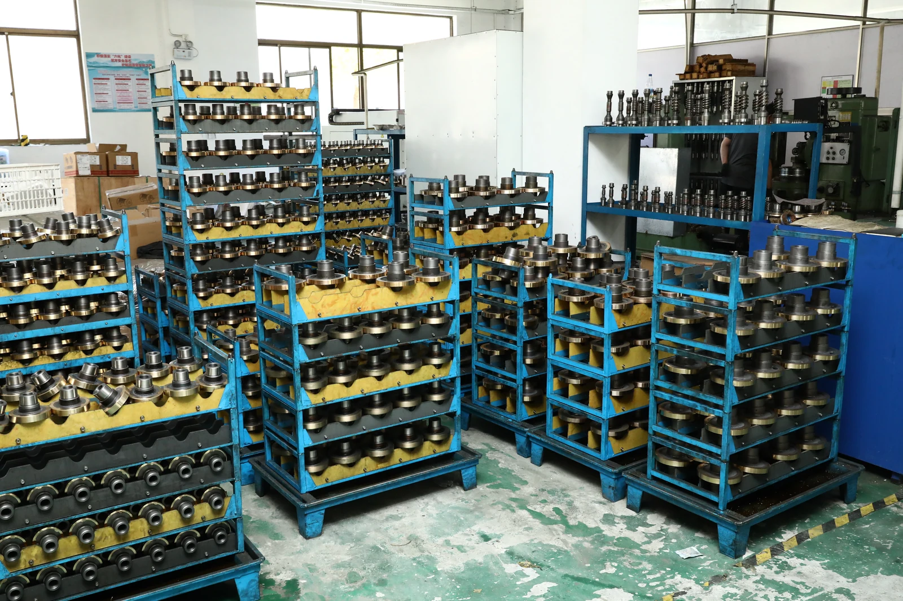

QUALITY SYSTEM
ISO 9001 Documentation
Quality-management documentation can support supplier qualification and review of controlled production processes. Request the current document and verify its holder, scope and validity.
Quality & Compliance
SMK supports buyer qualification with quality-system information, production records and product-compliance documentation for applicable gearbox, gear motor and electric motor models.
Documentation Overview
Document availability must be confirmed against the exact product model, configuration and destination market. The cards below describe the type of information buyers can request.
Quality-management documentation can support supplier qualification and review of controlled production processes. Request the current document and verify its holder, scope and validity.

CE-related documentation is available for applicable products. Confirm the exact model, configuration and intended market before relying on a declaration.

Documentation or test information may be available according to the product, material and destination requirements. Ask for the report matching your sourcing case.
Scope Matters
A logo alone is not enough. Procurement teams should match every document to the legal holder, product scope, model and market requirement.
| Document | Availability | What to confirm |
|---|---|---|
| ISO 9001 | Current documentation on request | Certificate holder, certification body, quality-management scope and validity date. |
| CE | For applicable products | Product model, applicable directive or standard, declaration issuer and configuration covered. |
| RoHS | Documentation subject to product and material | Restricted-substance scope, referenced model or material, report date and destination requirement. |
| REACH | Information subject to product and destination | Material scope, applicable substance information, report or declaration source and date. |
| Inspection & Testing Records | Confirmed by order requirement | Requested checks, acceptance criteria, model, quantity and agreed record format. |
Not every SMK product, configuration or order is covered by the same document. CE, RoHS and REACH requirements may differ by model, material and destination market. Always request confirmation for the exact product you plan to purchase.
Buyer Questions
Yes. Send the product model, configuration, destination market and required document type. Our team will confirm which current documents are available before ordering.
No. Availability and scope depend on the product model, configuration, material, destination and order requirements.
Include the gearbox or motor model, motor power, voltage, configuration, quantity, destination country and the name of the document your purchasing or compliance team needs.
Tell us your qualification checklist. SMK will confirm which quality-system, production, inspection and product-compliance records can be supplied for review.
Send the model, configuration, destination country and required document. We will confirm the applicable information rather than sending unrelated files.